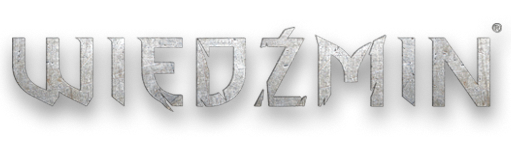

Fabuła
Postacie
Pop Kultura
Kontakt

Strona poświęcona przybliżeniu dziejów wielkiego łowcy potworów, Geraltowi z Rivii, słynnego polskiego Wiedźmina sławnego na całym świecie.
Autor strony: Patryk Ewkowski